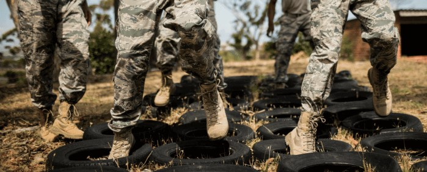

Tests 
Les semaines 1, 5, 9 et 13 sont consacrées aux tests physiques.
Durant chacune de ces semaines, les lundis, mardis, jeudis et vendredis, des examens auront lieu afin de mesurer la progression et les effets des entraînements au cours des semaines précédentes.
Des performances minimums sont requises afin de pouvoir être déclaré apte à l'intégration dans cette division.